פשוט להצליח במתמטיקה › כל הנושאים › חדו״א – חקירת פונקציות
חדו״א – חקירת פונקציות – סרטוני הסבר ותרגול
196 סרטוני הסבר ותרגול בנושא חדו״א – חקירת פונקציות – לשאלון 372, שאלון 471, שאלון 571. כל נושא מוסבר מהקל אל הקשה: קודם הרעיון, אחר כך תרגילים, ובסוף שאלות בסגנון בגרות. הכול בחינם, בשיטת "פשוט להצליח".
רוצים לעקוב אחרי ההתקדמות?נרשמים בחינם, וכל סרטון שראיתם מסומן ✓. ממשיכים מכל מכשיר.
הצטרפות בחינם ←חדו״א – חקירת פונקציות – שאלון 372 כל הנושאים של שאלון 372 ←
 פונקציית פולינום עם משיקים – שאלה בסיסית וטובה 3 4 5 יח
פונקציית פולינום עם משיקים – שאלה בסיסית וטובה 3 4 5 יח חקירת שורש – שאלת בגרות פתורה 803 382 חורף נבצרים 2022
חקירת שורש – שאלת בגרות פתורה 803 382 חורף נבצרים 2022 חקירת שורש – שאלת בגרות פתורה 803 382 קיץ 2022 מועד בחקירת שורש – שאלת בגרות פתורה 803 382 (2)
חקירת שורש – שאלת בגרות פתורה 803 382 קיץ 2022 מועד בחקירת שורש – שאלת בגרות פתורה 803 382 (2)חדו״א – חקירת פונקציות – שאלון 471 כל הנושאים של שאלון 471 ←
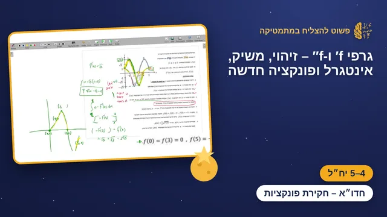
גרפי f′ ו-f″ – זיהוי, משיק, אינטגרל ופונקציה חדשה חקירת f(x)=2−2∕x² – משיק, אסימפטוטה ובעיית קיצון
חקירת f(x)=2−2∕x² – משיק, אסימפטוטה ובעיית קיצון חקירת f(x)=1+½x−√(2x+9) – פרמטר, תחום וקיצון
חקירת f(x)=1+½x−√(2x+9) – פרמטר, תחום וקיצון חקירת פונקציה רציונלית y=(ax+16)∕(x²−3x−4) – מציאת פרמטרים
חקירת פונקציה רציונלית y=(ax+16)∕(x²−3x−4) – מציאת פרמטרים חקירת פונקציה רציונלית שאלון 471 – מתכונת
חקירת פונקציה רציונלית שאלון 471 – מתכונת חקירת פונקציית שורש שאלון 471 – מתכונת
חקירת פונקציית שורש שאלון 471 – מתכונת f(x)=2x³−9x²+12x−a – פרמטר, משיק ושטח
f(x)=2x³−9x²+12x−a – פרמטר, משיק ושטח חקירת פולינום f(x)=x³−3x+2 ושטחים
חקירת פולינום f(x)=x³−3x+2 ושטחים פולינום – האיבר המוביל והתנהגות באינסוף, זיהוי גרף
פולינום – האיבר המוביל והתנהגות באינסוף, זיהוי גרף חקירת f(x)=a∕(x²−4) – מציאת פרמטר משיפוע המשיק
חקירת f(x)=a∕(x²−4) – מציאת פרמטר משיפוע המשיק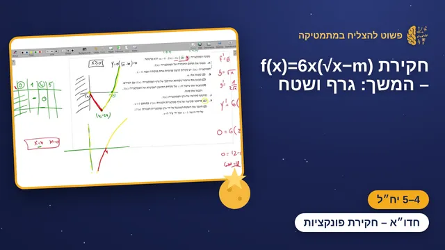
חקירת f(x)=6x(√x−m) – המשך: גרף ושטח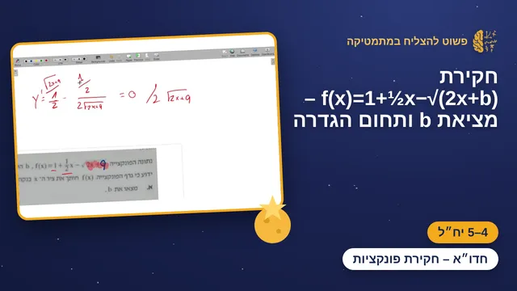
חקירת f(x)=1+½x−√(2x+b) – מציאת b ותחום הגדרה חקירת f(x)=√(5−2x)+bx ופונקציה קדומה
חקירת f(x)=√(5−2x)+bx ופונקציה קדומה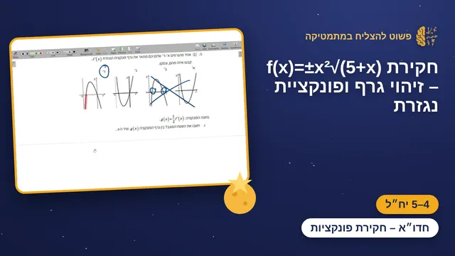
חקירת f(x)=±x²√(5+x) – זיהוי גרף ופונקציית נגזרת הקשר בין גרף הפונקציה לגרף הנגזרת
הקשר בין גרף הפונקציה לגרף הנגזרת חקירת f(x)=(x²−4x+5)∕(x−2) והפונקציה g(x)=│f(x)│
חקירת f(x)=(x²−4x+5)∕(x−2) והפונקציה g(x)=│f(x)│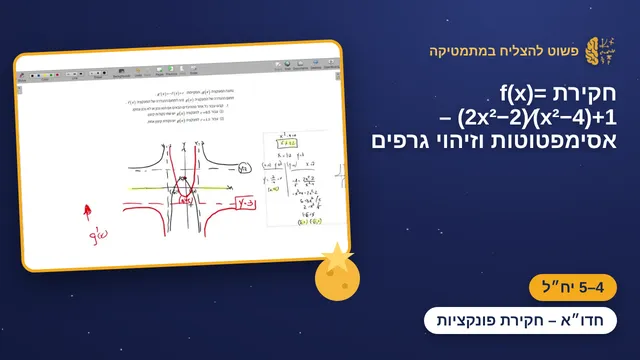
חקירת f(x)=(2x²−2)∕(x²−4)+1 – אסימפטוטות וזיהוי גרפים הקשר בין f, f′ ו-f″ – זיהוי גרפים
הקשר בין f, f′ ו-f″ – זיהוי גרפים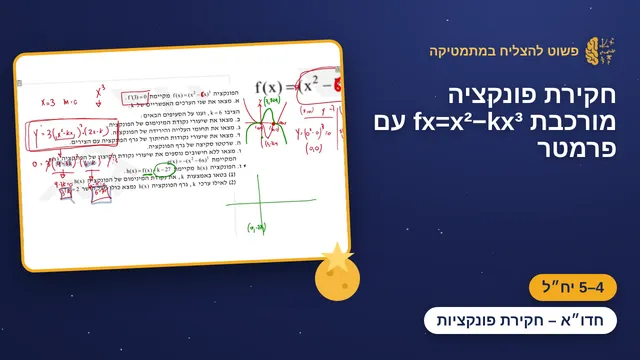
חקירת פונקציה מורכבת fx=x²−kx³ עם פרמטר פונקציה זוגית ואי זוגית – הבנה וזיהוי
פונקציה זוגית ואי זוגית – הבנה וזיהוי חקירת פולינום fx=3x⁴−2x³ – קיצון ותחומי עלייה וירידה
חקירת פולינום fx=3x⁴−2x³ – קיצון ותחומי עלייה וירידה חקירת פונקציה רציונלית עם פרמטר y=x−1∕x²−b²
חקירת פונקציה רציונלית עם פרמטר y=x−1∕x²−b² חקירת פולינום fx=3x⁴−2x³ – פתיחה
חקירת פולינום fx=3x⁴−2x³ – פתיחה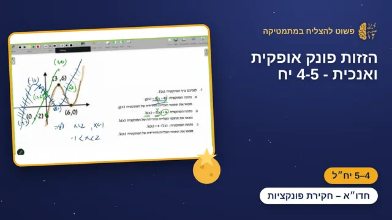
הזזות פונק אופקית ואנכית - 4-5 יח הזזות פונק אופקית ואנכית - 4-5 יח
הזזות פונק אופקית ואנכית - 4-5 יח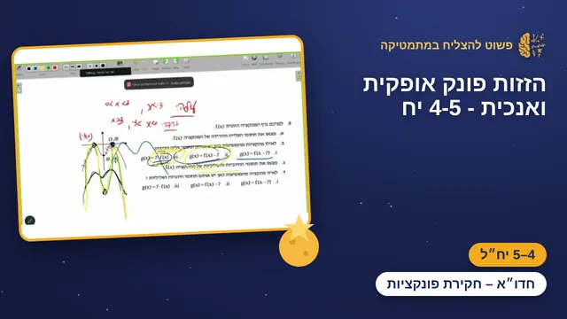
הזזות פונק אופקית ואנכית - 4-5 יח הזזות פונק אופקית ואנכית - 4-5 יח
הזזות פונק אופקית ואנכית - 4-5 יח הזזות פונק אופקית ואנכית - 4-5 יח
הזזות פונק אופקית ואנכית - 4-5 יח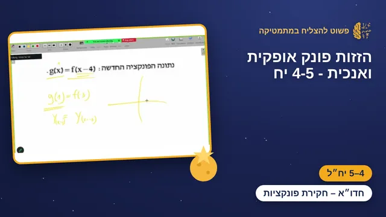
הזזות פונק אופקית ואנכית - 4-5 יח הזזות פונק אופקית ואנכית - 4-5 יח
הזזות פונק אופקית ואנכית - 4-5 יח הזזות פונק אופקית ואנכית - 4-5 יח
הזזות פונק אופקית ואנכית - 4-5 יח פונק כללית שאלה מתוקה וחמודה
פונק כללית שאלה מתוקה וחמודה חקירת שבר 471חקירת שבר בגרות 4 יח 471
חקירת שבר 471חקירת שבר בגרות 4 יח 471 חקירת שורש בגרות 4 יח
חקירת שורש בגרות 4 יח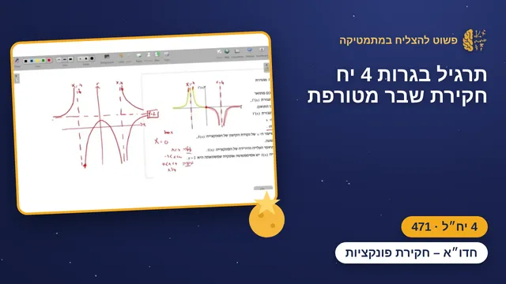
תרגיל בגרות 4 יח חקירת שבר מטורפת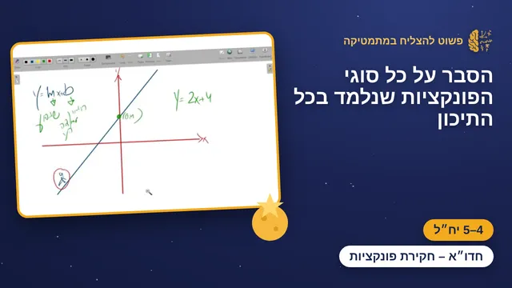
הסבר על כל סוגי הפונקציות שנלמד בכל התיכון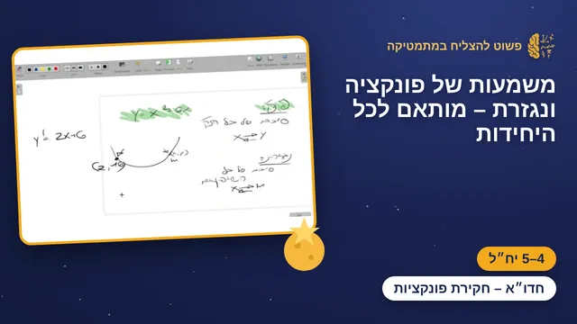
משמעות של פונקציה ונגזרת – מותאם לכל היחידות חקירה מלאה פונקציית שורש 4 יח הטופ של הטופ
חקירה מלאה פונקציית שורש 4 יח הטופ של הטופ הסבר משמעות פונקציית שורש – איך גוזרים, תחום הגדרה ופתירת משוואות
הסבר משמעות פונקציית שורש – איך גוזרים, תחום הגדרה ופתירת משוואות הסבר פונקציה זוגית ואי-זוגית
הסבר פונקציה זוגית ואי-זוגית משמעות של פונקציה ונגזרת
משמעות של פונקציה ונגזרת פונקציית שורש חקירה מלאה עם סעיפים חכמים
פונקציית שורש חקירה מלאה עם סעיפים חכמים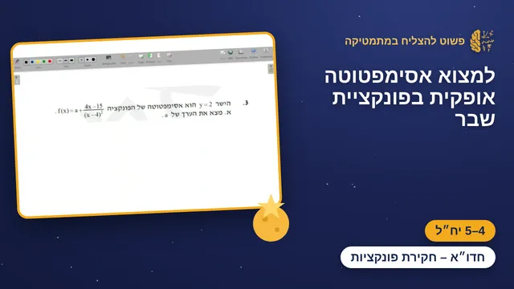
למצוא אסימפטוטה אופקית בפונקציית שבר חקירת שבר שאלות בגרות 471 4 יח 1
חקירת שבר שאלות בגרות 471 4 יח 1 חקירת שבר שאלות בגרות 471 4 יח 2
חקירת שבר שאלות בגרות 471 4 יח 2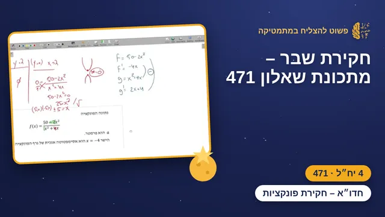
חקירת שבר – מתכונת שאלון 471 חקירת שורש – מתכונת שאלון 471
חקירת שורש – מתכונת שאלון 471 פונקציה מורכבת – תרגיל התחלה
פונקציה מורכבת – תרגיל התחלה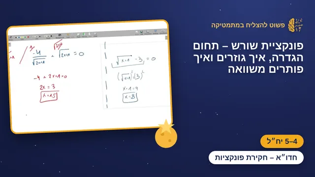
פונקציית שורש – תחום הגדרה, איך גוזרים ואיך פותרים משוואה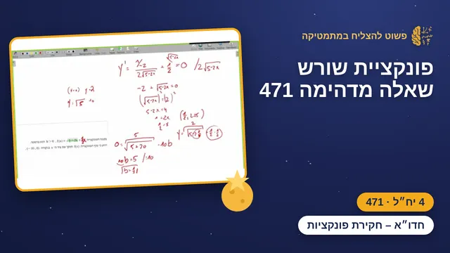
פונקציית שורש שאלה מדהימה 471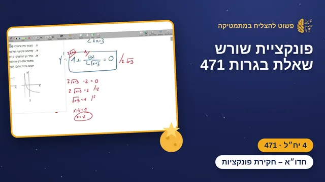
פונקציית שורש שאלת בגרות 471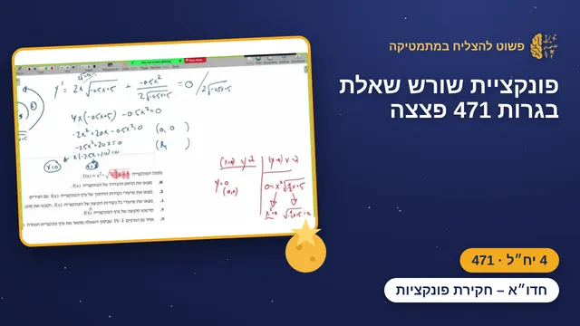
פונקציית שורש שאלת בגרות 471 פצצה פונקציית שורש שאלת בגרות 471 2
פונקציית שורש שאלת בגרות 471 2 פונקציית שורש 471 שאלות בסיסיות ומסכמות 4 יח 4
פונקציית שורש 471 שאלות בסיסיות ומסכמות 4 יח 4 פונקציית שורש 471 שאלות בסיסיות ומסכמות 4 יח 3
פונקציית שורש 471 שאלות בסיסיות ומסכמות 4 יח 3 פונקציית שורש 471 שאלות בסיסיות ומסכמות 4 יח 2
פונקציית שורש 471 שאלות בסיסיות ומסכמות 4 יח 2 פונקציית שורש 471 שאלות בסיסיות ומסכמות 4 יח 1
פונקציית שורש 471 שאלות בסיסיות ומסכמות 4 יח 1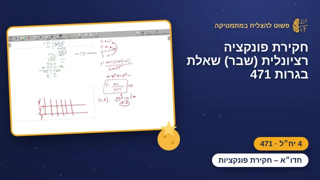
חקירת פונקציה רציונלית (שבר) שאלת בגרות 471 חקירת שבר עם סעיפים חכמים שאלון 471 4 יח 1
חקירת שבר עם סעיפים חכמים שאלון 471 4 יח 1 חקירת שבר עם סעיפים חכמים שאלון 471 4 יח 3
חקירת שבר עם סעיפים חכמים שאלון 471 4 יח 3 חקירת שבר עם סעיפים חכמים שאלון 471 4 יח 2
חקירת שבר עם סעיפים חכמים שאלון 471 4 יח 2 חקירת פונקציה שאלון 471 שאלת בגרות כולל סעיפים חכמים
חקירת פונקציה שאלון 471 שאלת בגרות כולל סעיפים חכמים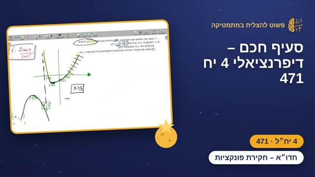
סעיף חכם – דיפרנציאלי 4 יח 471 איך מוצאים פרמטר מנתון קשר פונקציה-נגזרת שאלון 471
איך מוצאים פרמטר מנתון קשר פונקציה-נגזרת שאלון 471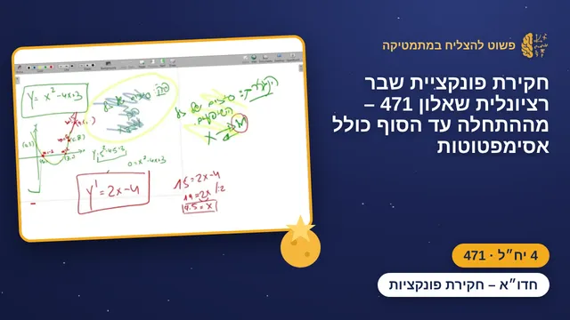
חקירת פונקציית שבר רציונלית שאלון 471 – מההתחלה עד הסוף כולל אסימפטוטות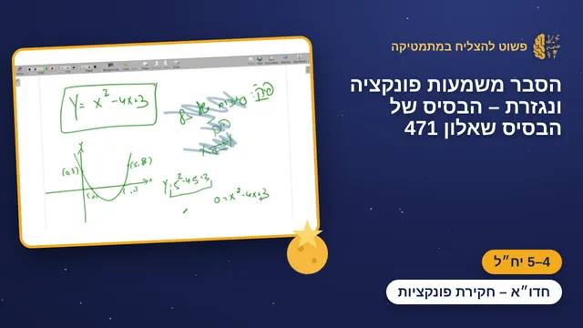
הסבר משמעות פונקציה ונגזרת – הבסיס של הבסיס שאלון 471 חקירת שבר עם סעיפים חכמים, הזזות וקשר פונקציה-נגזרת שאלון 471 1
חקירת שבר עם סעיפים חכמים, הזזות וקשר פונקציה-נגזרת שאלון 471 1 חקירת שבר עם סעיפים חכמים, הזזות וקשר פונקציה-נגזרת שאלון 471 2
חקירת שבר עם סעיפים חכמים, הזזות וקשר פונקציה-נגזרת שאלון 471 2 חקירת שורש – הסבר של כל החומר יא 4 יח
חקירת שורש – הסבר של כל החומר יא 4 יח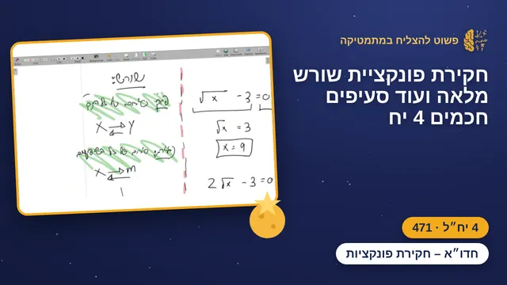
חקירת פונקציית שורש מלאה ועוד סעיפים חכמים 4 יח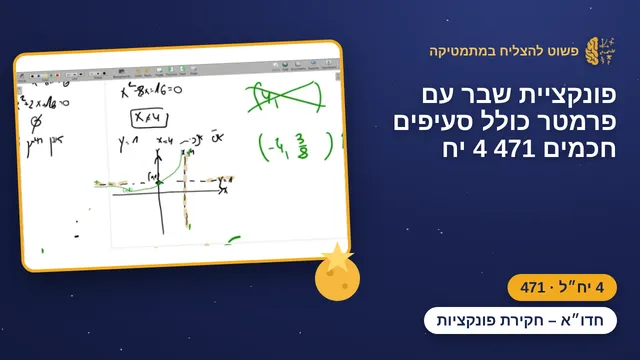
פונקציית שבר עם פרמטר כולל סעיפים חכמים 471 4 יח אסימפטוטה אופקית – הסבר נדיר ביותר 471
אסימפטוטה אופקית – הסבר נדיר ביותר 471 סעיף חכם 1 – לחלק לפונקציה: מה קורה לפונקציה 4 5 יח
סעיף חכם 1 – לחלק לפונקציה: מה קורה לפונקציה 4 5 יח חקירת שבר רציונלית שאלון 471 – חקירה מלאה 4 יח
חקירת שבר רציונלית שאלון 471 – חקירה מלאה 4 יח חקירת שבר רציונלית עם פרמטר שאלון 471 4 יח
חקירת שבר רציונלית עם פרמטר שאלון 471 4 יח קשר בין פונקציה לנגזרת עם פונקציית שבר – הבנה עמוקה 4 5 יח
קשר בין פונקציה לנגזרת עם פונקציית שבר – הבנה עמוקה 4 5 יח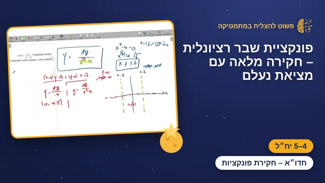
פונקציית שבר רציונלית – חקירה מלאה עם מציאת נעלם חקירה מלאה של פונקציה רציונלית (מנה) שאלון 471 571 – מהבסיס עד הסוף
חקירה מלאה של פונקציה רציונלית (מנה) שאלון 471 571 – מהבסיס עד הסוף סעיפי חשיבה בפונקציה והזזות
סעיפי חשיבה בפונקציה והזזות חקירת פונקציית פולינום – חקירה מלאה כולל סעיפים מיוחדים
חקירת פונקציית פולינום – חקירה מלאה כולל סעיפים מיוחדים איך פותרים משוואות פולינום ומורכבת – הכי פשוט בעולםפונקציה – מה אנחנו הולכים לעשות איתה ומה אנחנו רוצים ממנהמשמעות של פונקציה ונגזרת – כל התורה על רגל אחת
איך פותרים משוואות פולינום ומורכבת – הכי פשוט בעולםפונקציה – מה אנחנו הולכים לעשות איתה ומה אנחנו רוצים ממנהמשמעות של פונקציה ונגזרת – כל התורה על רגל אחת הסיפור של הנגזרת – משמעות ואיך גוזרים פולינום ומורכבתחקירת פונקציה רציונלית – הסבר על אסימפטוטות אנכית ואופקית
הסיפור של הנגזרת – משמעות ואיך גוזרים פולינום ומורכבתחקירת פונקציה רציונלית – הסבר על אסימפטוטות אנכית ואופקית הסבר קשר בין פונקציה לנגזרת ולנגזרת שנייהחקירת שורש – פונקציית מכפלה, תרגיל בסיסי וטוב 4 5 יחפונקציית פולינום עם משיקים – שאלה בסיסית וטובה 3 4 5 יח
הסבר קשר בין פונקציה לנגזרת ולנגזרת שנייהחקירת שורש – פונקציית מכפלה, תרגיל בסיסי וטוב 4 5 יחפונקציית פולינום עם משיקים – שאלה בסיסית וטובה 3 4 5 יח חקירת שבר עם סעיפים חכמים – שאלה פצצה 471 571
חקירת שבר עם סעיפים חכמים – שאלה פצצה 471 571 חקירת שורש עם נעלם וחקירה מלאה עם סעיפים חכמים 471 571
חקירת שורש עם נעלם וחקירה מלאה עם סעיפים חכמים 471 571 חקירת פולינום עם מציאת נעלם וסעיף מחשבה כיתה י 471 4 יח
חקירת פולינום עם מציאת נעלם וסעיף מחשבה כיתה י 471 4 יח חקירת פולינום עם הבנה ומחשבה – לפתוח תודעה 471
חקירת פולינום עם הבנה ומחשבה – לפתוח תודעה 471 פונקציית שבר רציונלית – שאלה בסיסית על מציאת שיפוע 471-571
פונקציית שבר רציונלית – שאלה בסיסית על מציאת שיפוע 471-571 פונקציית שבר רציונלית – שיפועים ומשיקים 4-5 יחפונקציית שבר – משיקים ושיפועים, שאלה יפה וחמודהאיך גוזרים נגזרת שורש – סיכום 4 5 יח
פונקציית שבר רציונלית – שיפועים ומשיקים 4-5 יחפונקציית שבר – משיקים ושיפועים, שאלה יפה וחמודהאיך גוזרים נגזרת שורש – סיכום 4 5 יח תחום הגדרה של שורש 4 5 יחחקירת פולינום עם סעיפי חשיבה
תחום הגדרה של שורש 4 5 יחחקירת פולינום עם סעיפי חשיבה פונקציה מורכבת – שאלות לדוגמה כולל קשר פונקציה-נגזרת ושאלות חשיבה 1
פונקציה מורכבת – שאלות לדוגמה כולל קשר פונקציה-נגזרת ושאלות חשיבה 1 פונקציה מורכבת – שאלות לדוגמה כולל קשר פונקציה-נגזרת ושאלות חשיבה 2
פונקציה מורכבת – שאלות לדוגמה כולל קשר פונקציה-נגזרת ושאלות חשיבה 2 פונקציה מורכבת – שאלה להתחלה, צעדים ראשונים 471
פונקציה מורכבת – שאלה להתחלה, צעדים ראשונים 471 פונקציה מורכבת – הבסיס: איך גוזרים 471פונקציה מורכבת – הבסיס: פתרון משוואה, זוגית ואי-זוגית 471קשר בין פונקציה לנגזרת – מהות ומשמעות, סרטון חובה 471 כיתה י (תרגילים)קשר בין פונקציה לנגזרת – מהות ומשמעות, סרטון חובה 471 כיתה יקשר בין פונקציה לנגזרת – מהות ומשמעות 471 כיתה י (תרגילים 2)
פונקציה מורכבת – הבסיס: איך גוזרים 471פונקציה מורכבת – הבסיס: פתרון משוואה, זוגית ואי-זוגית 471קשר בין פונקציה לנגזרת – מהות ומשמעות, סרטון חובה 471 כיתה י (תרגילים)קשר בין פונקציה לנגזרת – מהות ומשמעות, סרטון חובה 471 כיתה יקשר בין פונקציה לנגזרת – מהות ומשמעות 471 כיתה י (תרגילים 2) חקירת פולינום חלק ב' כולל מציאת נעלם
חקירת פולינום חלק ב' כולל מציאת נעלם חקירת פולינום חלק א' כולל מציאת נעלםמשמעות השיפועים בפונקציה – נקודות קיצון, עלייה וירידה
חקירת פולינום חלק א' כולל מציאת נעלםמשמעות השיפועים בפונקציה – נקודות קיצון, עלייה וירידה פונקציית פולינום – שאלה פשוטה ומשמעותית 471 4 יחמשמעות של פונקציה ושל נגזרת – כל החומר בדקה
פונקציית פולינום – שאלה פשוטה ומשמעותית 471 4 יחמשמעות של פונקציה ושל נגזרת – כל החומר בדקה פונקציה מורכבת – משמעות, איך פותרים משוואות וגוזרים
פונקציה מורכבת – משמעות, איך פותרים משוואות וגוזרים פונקציה מורכבת – חקירה מלאה
פונקציה מורכבת – חקירה מלאה חקירת שורש נדירה – כמה רמות מעל הבגרות יא 4 יח 481
חקירת שורש נדירה – כמה רמות מעל הבגרות יא 4 יח 481 פונקציה מורכבת 4 5 יח – סיכום כל הנושא כולל סעיפים חכמיםחקירת שורש 481 – שאלת בגרות מדהימהשאלת בגרות חקירת שבר 481 804 – חקירה רציונלית עם סעיף חכםפונקציה מורכבת – פתרון משוואות, שיפועים ומשוואת משיק 481 471 2
פונקציה מורכבת 4 5 יח – סיכום כל הנושא כולל סעיפים חכמיםחקירת שורש 481 – שאלת בגרות מדהימהשאלת בגרות חקירת שבר 481 804 – חקירה רציונלית עם סעיף חכםפונקציה מורכבת – פתרון משוואות, שיפועים ומשוואת משיק 481 471 2 פונקציה מורכבת – פתרון משוואות, שיפועים ומשוואת משיק 481 471 1
פונקציה מורכבת – פתרון משוואות, שיפועים ומשוואת משיק 481 471 1 חקירת שורש 4 5 יח – פונקציית מכפלה ומציאת פרמטר כולל סעיף חכםחקירת שבר – פתרון 2 שאלות בגרות עם סעיפים חכמים 481
חקירת שורש 4 5 יח – פונקציית מכפלה ומציאת פרמטר כולל סעיף חכםחקירת שבר – פתרון 2 שאלות בגרות עם סעיפים חכמים 481 חקירות שורש – שאלות בגרות והסבר כל החומר
חקירות שורש – שאלות בגרות והסבר כל החומר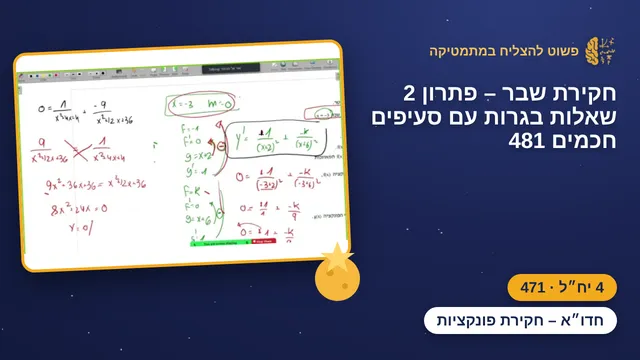
חקירת שבר – פתרון 2 שאלות בגרות עם סעיפים חכמים 481חקירת פונקציה עם הזזות אופקית ואנכית – תרגיל 23 פונקציית שורש – נקודות קיצון קצה ומציאת פרמטרים
פונקציית שורש – נקודות קיצון קצה ומציאת פרמטרים פונקציית שורש – מציאת 2 פרמטרים
פונקציית שורש – מציאת 2 פרמטרים פונקציית שורש ממעלה שנייה – נקודת קיצון עם פרמטר
פונקציית שורש ממעלה שנייה – נקודת קיצון עם פרמטר חקירת פולינום עם סעיף חכם ופונקציה זוגית – שאלה 19
חקירת פולינום עם סעיף חכם ופונקציה זוגית – שאלה 19 פונקציית שורש – הסבר, תחום הגדרה, איך ולמה גוזרים עד חקירה מלאה
פונקציית שורש – הסבר, תחום הגדרה, איך ולמה גוזרים עד חקירה מלאה חקירת פונקציה מלאה – תחום הגדרה, אסימפטוטות ונגזרות: פולינום, מורכבת ורציונליתחקירת פונקציה מלאה – משמעות הפונקציה והנגזרת כיתה י 481
חקירת פונקציה מלאה – תחום הגדרה, אסימפטוטות ונגזרות: פולינום, מורכבת ורציונליתחקירת פונקציה מלאה – משמעות הפונקציה והנגזרת כיתה י 481 חורף 2022 מועד א 481 – שאלה 6 חקירת שבר
חורף 2022 מועד א 481 – שאלה 6 חקירת שבר קיץ 2023 מועד ב 481 – שאלה 6 חקירת שבר
קיץ 2023 מועד ב 481 – שאלה 6 חקירת שבר חקירות עם משיקים כיתה י – פולינום, דיפרנציאלי תרגיל פתור 3
חקירות עם משיקים כיתה י – פולינום, דיפרנציאלי תרגיל פתור 3 חקירות עם משיקים כיתה י – פולינום, מציאת נעלמים 3חקירות עם משיקים כיתה י – פולינום, מציאת נעלמים 2
חקירות עם משיקים כיתה י – פולינום, מציאת נעלמים 3חקירות עם משיקים כיתה י – פולינום, מציאת נעלמים 2 חקירות עם משיקים כיתה י – פולינום, מציאת נעלמים 1חקירות עם משיקים כיתה י – פולינום, דיפרנציאלי תרגיל פתור 2חקירות עם משיקים כיתה י – פולינום, דיפרנציאלי תרגיל פתור 1חקירות עם משיקים כיתה י – פולינום, דיפרנציאליפונקציה זוגית ואי-זוגית כיתה י 471נגזרות ומשיקים כיתה י – 2 פונקציות משיקות זו לזו
חקירות עם משיקים כיתה י – פולינום, מציאת נעלמים 1חקירות עם משיקים כיתה י – פולינום, דיפרנציאלי תרגיל פתור 2חקירות עם משיקים כיתה י – פולינום, דיפרנציאלי תרגיל פתור 1חקירות עם משיקים כיתה י – פולינום, דיפרנציאליפונקציה זוגית ואי-זוגית כיתה י 471נגזרות ומשיקים כיתה י – 2 פונקציות משיקות זו לזו פונקציה רציונלית – חקירה מלאה, תרגיל פתורחקירת פונקציית שבר רציונלית – תרגיל פתור
פונקציה רציונלית – חקירה מלאה, תרגיל פתורחקירת פונקציית שבר רציונלית – תרגיל פתור פולינום עם מציאת נעלמים – קשר פונקציה-נגזרת, הזזות, זוגיותכיתה י פונקציית חזקה 471 – תרגיל פתורפונקציה רציונלית – חקירה עם 2 שבריםעמ' 62 שאלה 8 (יואל גבע חלק ב) 471 כיתה י – פונקציית חזקהעמ' 70 שאלה 18 (יואל גבע חלק ב) 471 כיתה י – פונקציית פולינוםתרגיל 16 עמ' 881 – חקירת פונקציה מורכבת עם פרמטר (יואל גבע כחול)481 חורף 2021 נבצרים – שאלה 6 חקירת שבר
פולינום עם מציאת נעלמים – קשר פונקציה-נגזרת, הזזות, זוגיותכיתה י פונקציית חזקה 471 – תרגיל פתורפונקציה רציונלית – חקירה עם 2 שבריםעמ' 62 שאלה 8 (יואל גבע חלק ב) 471 כיתה י – פונקציית חזקהעמ' 70 שאלה 18 (יואל גבע חלק ב) 471 כיתה י – פונקציית פולינוםתרגיל 16 עמ' 881 – חקירת פונקציה מורכבת עם פרמטר (יואל גבע כחול)481 חורף 2021 נבצרים – שאלה 6 חקירת שבר קיץ 2021 מועד מיוחד – שאלה 6 481 חקירת שבר רציונליתסיכום פונקציות 481 – כל הסוגים: שורש, מורכבת ורציונליתנגזרות ושיפועים כיתה י – דיפרנציאלי
קיץ 2021 מועד מיוחד – שאלה 6 481 חקירת שבר רציונליתסיכום פונקציות 481 – כל הסוגים: שורש, מורכבת ורציונליתנגזרות ושיפועים כיתה י – דיפרנציאלי כיתה י פולינום – נגזרות, שיפועים ומשוואת משיק 471 תרגיל 21
כיתה י פולינום – נגזרות, שיפועים ומשוואת משיק 471 תרגיל 21 כיתה י פולינום – נגזרות, שיפועים ומשוואת משיק 471
כיתה י פולינום – נגזרות, שיפועים ומשוואת משיק 471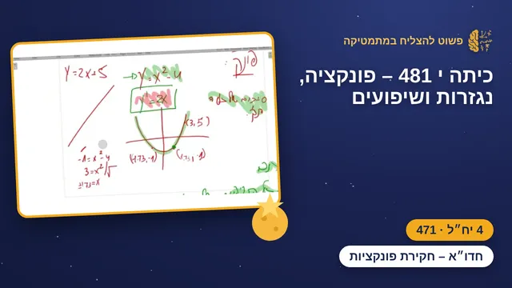
כיתה י 481 – פונקציה, נגזרות ושיפועים פונקציה, נגזרות ושיפועים כיתה י 471
פונקציה, נגזרות ושיפועים כיתה י 471 כיתה י – פונקציה: הסבר ופתרון משוואות ממעלה ראשונה ושנייה
כיתה י – פונקציה: הסבר ופתרון משוואות ממעלה ראשונה ושנייה סיכום חקירת פונקציה רציונלית (שבר) 481 כיתה יא
סיכום חקירת פונקציה רציונלית (שבר) 481 כיתה יא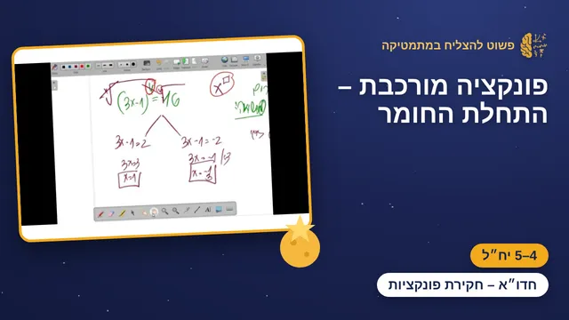
פונקציה מורכבת – התחלת החומרהקשר בין פונקציה לנגזרת · סרטון קצרחדו״א – חקירת פונקציות – שאלון 571 כל הנושאים של שאלון 571 ←
גרפי f′ ו-f″ – זיהוי, משיק, אינטגרל ופונקציה חדשהחקירת f(x)=2−2∕x² – משיק, אסימפטוטה ובעיית קיצוןחקירת f(x)=1+½x−√(2x+9) – פרמטר, תחום וקיצוןחקירת פונקציה רציונלית y=(ax+16)∕(x²−3x−4) – מציאת פרמטרים חקירת פונקציה רציונלית עם פרמטר 5 יח – הכנה לכיתה יא – חלק 2: נגזרת וקיצון
חקירת פונקציה רציונלית עם פרמטר 5 יח – הכנה לכיתה יא – חלק 2: נגזרת וקיצון חקירת פונקציה רציונלית עם פרמטר 5 יח – הכנה לכיתה יא – חלק 3: טבלה ושרטוטf(x)=2x³−9x²+12x−a – פרמטר, משיק ושטחחקירת פולינום f(x)=x³−3x+2 ושטחיםפולינום – האיבר המוביל והתנהגות באינסוף, זיהוי גרףחקירת f(x)=a∕(x²−4) – מציאת פרמטר משיפוע המשיקחקירת f(x)=6x(√x−m) – המשך: גרף ושטחחקירת f(x)=1+½x−√(2x+b) – מציאת b ותחום הגדרהחקירת f(x)=√(5−2x)+bx ופונקציה קדומהחקירת f(x)=±x²√(5+x) – זיהוי גרף ופונקציית נגזרתהקשר בין גרף הפונקציה לגרף הנגזרתחקירת f(x)=(x²−4x+5)∕(x−2) והפונקציה g(x)=│f(x)│חקירת f(x)=(2x²−2)∕(x²−4)+1 – אסימפטוטות וזיהוי גרפיםהקשר בין f, f′ ו-f″ – זיהוי גרפיםחקירת פונקציה מורכבת fx=x²−kx³ עם פרמטרפונקציה זוגית ואי זוגית – הבנה וזיהויחקירת פולינום fx=3x⁴−2x³ – קיצון ותחומי עלייה וירידהחקירת פונקציה רציונלית עם פרמטר y=x−1∕x²−b²חקירת פולינום fx=3x⁴−2x³ – פתיחה
חקירת פונקציה רציונלית עם פרמטר 5 יח – הכנה לכיתה יא – חלק 3: טבלה ושרטוטf(x)=2x³−9x²+12x−a – פרמטר, משיק ושטחחקירת פולינום f(x)=x³−3x+2 ושטחיםפולינום – האיבר המוביל והתנהגות באינסוף, זיהוי גרףחקירת f(x)=a∕(x²−4) – מציאת פרמטר משיפוע המשיקחקירת f(x)=6x(√x−m) – המשך: גרף ושטחחקירת f(x)=1+½x−√(2x+b) – מציאת b ותחום הגדרהחקירת f(x)=√(5−2x)+bx ופונקציה קדומהחקירת f(x)=±x²√(5+x) – זיהוי גרף ופונקציית נגזרתהקשר בין גרף הפונקציה לגרף הנגזרתחקירת f(x)=(x²−4x+5)∕(x−2) והפונקציה g(x)=│f(x)│חקירת f(x)=(2x²−2)∕(x²−4)+1 – אסימפטוטות וזיהוי גרפיםהקשר בין f, f′ ו-f″ – זיהוי גרפיםחקירת פונקציה מורכבת fx=x²−kx³ עם פרמטרפונקציה זוגית ואי זוגית – הבנה וזיהויחקירת פולינום fx=3x⁴−2x³ – קיצון ותחומי עלייה וירידהחקירת פונקציה רציונלית עם פרמטר y=x−1∕x²−b²חקירת פולינום fx=3x⁴−2x³ – פתיחה הסבר קשר בין כל הפונק קשר בין נגזרת ראשונה לשניה הסבר מטורף 5 יח
הסבר קשר בין כל הפונק קשר בין נגזרת ראשונה לשניה הסבר מטורף 5 יח תרגילי קעירות וקשר בין פונק 571 5 יח מתמטיקה הגאונים 2
תרגילי קעירות וקשר בין פונק 571 5 יח מתמטיקה הגאונים 2 תרגילי קעירות וקשר בין פונק 571 5 יח מתמטיקה הגאונים 1
תרגילי קעירות וקשר בין פונק 571 5 יח מתמטיקה הגאונים 1 תרגילי קעירות וקשר בין פונק 571 5 יח מתמטיקה הגאונים 3הזזות פונק אופקית ואנכית - 4-5 יחהזזות פונק אופקית ואנכית - 4-5 יחהזזות פונק אופקית ואנכית - 4-5 יחהזזות פונק אופקית ואנכית - 4-5 יחהזזות פונק אופקית ואנכית - 4-5 יחהזזות פונק אופקית ואנכית - 4-5 יחהזזות פונק אופקית ואנכית - 4-5 יחהזזות פונק אופקית ואנכית - 4-5 יחפונק כללית שאלה מתוקה וחמודההסבר על כל סוגי הפונקציות שנלמד בכל התיכוןמשמעות של פונקציה ונגזרת – מותאם לכל היחידותהסבר משמעות פונקציית שורש – איך גוזרים, תחום הגדרה ופתירת משוואות
תרגילי קעירות וקשר בין פונק 571 5 יח מתמטיקה הגאונים 3הזזות פונק אופקית ואנכית - 4-5 יחהזזות פונק אופקית ואנכית - 4-5 יחהזזות פונק אופקית ואנכית - 4-5 יחהזזות פונק אופקית ואנכית - 4-5 יחהזזות פונק אופקית ואנכית - 4-5 יחהזזות פונק אופקית ואנכית - 4-5 יחהזזות פונק אופקית ואנכית - 4-5 יחהזזות פונק אופקית ואנכית - 4-5 יחפונק כללית שאלה מתוקה וחמודההסבר על כל סוגי הפונקציות שנלמד בכל התיכוןמשמעות של פונקציה ונגזרת – מותאם לכל היחידותהסבר משמעות פונקציית שורש – איך גוזרים, תחום הגדרה ופתירת משוואות קשר בין פונקציה לנגזרת לנגזרת שנייה 5 יח 4
קשר בין פונקציה לנגזרת לנגזרת שנייה 5 יח 4 קשר בין פונקציה לנגזרת לנגזרת שנייה 5 יח 3הסבר פונקציה זוגית ואי-זוגיתמשמעות של פונקציה ונגזרתפונקציית שורש חקירה מלאה עם סעיפים חכמיםלמצוא אסימפטוטה אופקית בפונקציית שברעבודת קיץ הכנה לכיתה יא 5 יח – שאלת שבר עם פרמטר
קשר בין פונקציה לנגזרת לנגזרת שנייה 5 יח 3הסבר פונקציה זוגית ואי-זוגיתמשמעות של פונקציה ונגזרתפונקציית שורש חקירה מלאה עם סעיפים חכמיםלמצוא אסימפטוטה אופקית בפונקציית שברעבודת קיץ הכנה לכיתה יא 5 יח – שאלת שבר עם פרמטר חקירת פונקציית שבר 571 שאלות בגרות 5 יח
חקירת פונקציית שבר 571 שאלות בגרות 5 יח שאלות קצרות 571 5 יח – פונקציה זוגית ואי-זוגית
שאלות קצרות 571 5 יח – פונקציה זוגית ואי-זוגית שאלות קצרות 571 5 יח – תחום הגדרה עם חור בפונקציית שברפונקציה מורכבת – תרגיל התחלה
שאלות קצרות 571 5 יח – תחום הגדרה עם חור בפונקציית שברפונקציה מורכבת – תרגיל התחלה 571 שאלה 1 שאלות קצרות – פונקציה עם שבר ושורש
571 שאלה 1 שאלות קצרות – פונקציה עם שבר ושורש תרגיל דיפרנציאלי טיל בליסטי 5 יח כיתה יהסבר משמעות פונקציה ונגזרת – הבסיס של הבסיס שאלון 471אסימפטוטה אופקית – הסבר נדיר ביותר 471סעיף חכם 1 – לחלק לפונקציה: מה קורה לפונקציה 4 5 יחקשר בין פונקציה לנגזרת עם פונקציית שבר – הבנה עמוקה 4 5 יחפונקציית שבר רציונלית – חקירה מלאה עם מציאת נעלםחקירה מלאה של פונקציה רציונלית (מנה) שאלון 471 571 – מהבסיס עד הסוףסעיפי חשיבה בפונקציה והזזותחקירת פונקציית פולינום – חקירה מלאה כולל סעיפים מיוחדיםאיך פותרים משוואות פולינום ומורכבת – הכי פשוט בעולםפונקציה – מה אנחנו הולכים לעשות איתה ומה אנחנו רוצים ממנהמשמעות של פונקציה ונגזרת – כל התורה על רגל אחתהסיפור של הנגזרת – משמעות ואיך גוזרים פולינום ומורכבתחקירת פונקציה רציונלית – הסבר על אסימפטוטות אנכית ואופקיתהסבר קשר בין פונקציה לנגזרת ולנגזרת שנייהחקירת שורש – פונקציית מכפלה, תרגיל בסיסי וטוב 4 5 יחפונקציית פולינום עם משיקים – שאלה בסיסית וטובה 3 4 5 יחחקירת שבר עם סעיפים חכמים – שאלה פצצה 471 571חקירת שורש עם נעלם וחקירה מלאה עם סעיפים חכמים 471 571חקירת פולינום עם הבנה ומחשבה – לפתוח תודעה 471פונקציית שבר רציונלית – שאלה בסיסית על מציאת שיפוע 471-571פונקציית שבר רציונלית – שיפועים ומשיקים 4-5 יחפונקציית שבר – משיקים ושיפועים, שאלה יפה וחמודהאיך גוזרים נגזרת שורש – סיכום 4 5 יחתחום הגדרה של שורש 4 5 יחחקירת פולינום עם סעיפי חשיבהפונקציה מורכבת – שאלות לדוגמה כולל קשר פונקציה-נגזרת ושאלות חשיבה 1פונקציה מורכבת – שאלות לדוגמה כולל קשר פונקציה-נגזרת ושאלות חשיבה 2חקירת פולינום חלק ב' כולל מציאת נעלםחקירת פולינום חלק א' כולל מציאת נעלםמשמעות השיפועים בפונקציה – נקודות קיצון, עלייה וירידהמשמעות של פונקציה ושל נגזרת – כל החומר בדקהשאלת פונקציה ומחשבה ברמה גבוהה 5 יח כיתה י-יאפונקציה מורכבת – משמעות, איך פותרים משוואות וגוזריםפונקציה מורכבת – חקירה מלאהפונקציה מורכבת 4 5 יח – סיכום כל הנושא כולל סעיפים חכמיםחקירת שבר 5 יח – שאלה חכמה ביותר
תרגיל דיפרנציאלי טיל בליסטי 5 יח כיתה יהסבר משמעות פונקציה ונגזרת – הבסיס של הבסיס שאלון 471אסימפטוטה אופקית – הסבר נדיר ביותר 471סעיף חכם 1 – לחלק לפונקציה: מה קורה לפונקציה 4 5 יחקשר בין פונקציה לנגזרת עם פונקציית שבר – הבנה עמוקה 4 5 יחפונקציית שבר רציונלית – חקירה מלאה עם מציאת נעלםחקירה מלאה של פונקציה רציונלית (מנה) שאלון 471 571 – מהבסיס עד הסוףסעיפי חשיבה בפונקציה והזזותחקירת פונקציית פולינום – חקירה מלאה כולל סעיפים מיוחדיםאיך פותרים משוואות פולינום ומורכבת – הכי פשוט בעולםפונקציה – מה אנחנו הולכים לעשות איתה ומה אנחנו רוצים ממנהמשמעות של פונקציה ונגזרת – כל התורה על רגל אחתהסיפור של הנגזרת – משמעות ואיך גוזרים פולינום ומורכבתחקירת פונקציה רציונלית – הסבר על אסימפטוטות אנכית ואופקיתהסבר קשר בין פונקציה לנגזרת ולנגזרת שנייהחקירת שורש – פונקציית מכפלה, תרגיל בסיסי וטוב 4 5 יחפונקציית פולינום עם משיקים – שאלה בסיסית וטובה 3 4 5 יחחקירת שבר עם סעיפים חכמים – שאלה פצצה 471 571חקירת שורש עם נעלם וחקירה מלאה עם סעיפים חכמים 471 571חקירת פולינום עם הבנה ומחשבה – לפתוח תודעה 471פונקציית שבר רציונלית – שאלה בסיסית על מציאת שיפוע 471-571פונקציית שבר רציונלית – שיפועים ומשיקים 4-5 יחפונקציית שבר – משיקים ושיפועים, שאלה יפה וחמודהאיך גוזרים נגזרת שורש – סיכום 4 5 יחתחום הגדרה של שורש 4 5 יחחקירת פולינום עם סעיפי חשיבהפונקציה מורכבת – שאלות לדוגמה כולל קשר פונקציה-נגזרת ושאלות חשיבה 1פונקציה מורכבת – שאלות לדוגמה כולל קשר פונקציה-נגזרת ושאלות חשיבה 2חקירת פולינום חלק ב' כולל מציאת נעלםחקירת פולינום חלק א' כולל מציאת נעלםמשמעות השיפועים בפונקציה – נקודות קיצון, עלייה וירידהמשמעות של פונקציה ושל נגזרת – כל החומר בדקהשאלת פונקציה ומחשבה ברמה גבוהה 5 יח כיתה י-יאפונקציה מורכבת – משמעות, איך פותרים משוואות וגוזריםפונקציה מורכבת – חקירה מלאהפונקציה מורכבת 4 5 יח – סיכום כל הנושא כולל סעיפים חכמיםחקירת שבר 5 יח – שאלה חכמה ביותר חקירת שבר שאלה 6 5 יח 581
חקירת שבר שאלה 6 5 יח 581 חקירת שבר עם סעיפים חכמים רמת 5 יח כיתה י 571 1חקירת שבר עם סעיפים חכמים רמת 5 יח כיתה י 571 2פונקציה מורכבת – פתרון משוואות, שיפועים ומשוואת משיק 481 471 2פונקציה מורכבת – פתרון משוואות, שיפועים ומשוואת משיק 481 471 1חקירת שורש 4 5 יח – פונקציית מכפלה ומציאת פרמטר כולל סעיף חכםחקירות שורש – שאלות בגרות והסבר כל החומרחקירת פונקציה עם הזזות אופקית ואנכית – תרגיל 23פונקציית שורש – נקודות קיצון קצה ומציאת פרמטריםפונקציית שורש – מציאת 2 פרמטריםפונקציית שורש ממעלה שנייה – נקודת קיצון עם פרמטרחקירת פולינום עם סעיף חכם ופונקציה זוגית – שאלה 19פונקציית שורש – הסבר, תחום הגדרה, איך ולמה גוזרים עד חקירה מלאהחקירת פונקציה מלאה – תחום הגדרה, אסימפטוטות ונגזרות: פולינום, מורכבת ורציונליתחקירת פונקציה מלאה – משמעות הפונקציה והנגזרת כיתה י 481חקירות עם משיקים כיתה י – פולינום, דיפרנציאלי תרגיל פתור 3חקירות עם משיקים כיתה י – פולינום, מציאת נעלמים 3חקירות עם משיקים כיתה י – פולינום, מציאת נעלמים 2חקירות עם משיקים כיתה י – פולינום, מציאת נעלמים 1חקירות עם משיקים כיתה י – פולינום, דיפרנציאלי תרגיל פתור 2חקירות עם משיקים כיתה י – פולינום, דיפרנציאלי תרגיל פתור 1חקירות עם משיקים כיתה י – פולינום, דיפרנציאלינגזרות ומשיקים כיתה י – 2 פונקציות משיקות זו לזופונקציה רציונלית – חקירה מלאה, תרגיל פתורחקירת פונקציית שבר רציונלית – תרגיל פתורפולינום עם מציאת נעלמים – קשר פונקציה-נגזרת, הזזות, זוגיותפונקציה רציונלית – חקירה עם 2 שבריםתרגיל 16 עמ' 881 – חקירת פונקציה מורכבת עם פרמטר (יואל גבע כחול)נגזרות ושיפועים כיתה י – דיפרנציאליכיתה י – פונקציה: הסבר ופתרון משוואות ממעלה ראשונה ושנייהפונקציה מורכבת – התחלת החומרהקשר בין פונקציה לנגזרת · סרטון קצראיך מסתכלים על פונקציה · סרטון קצר
חקירת שבר עם סעיפים חכמים רמת 5 יח כיתה י 571 1חקירת שבר עם סעיפים חכמים רמת 5 יח כיתה י 571 2פונקציה מורכבת – פתרון משוואות, שיפועים ומשוואת משיק 481 471 2פונקציה מורכבת – פתרון משוואות, שיפועים ומשוואת משיק 481 471 1חקירת שורש 4 5 יח – פונקציית מכפלה ומציאת פרמטר כולל סעיף חכםחקירות שורש – שאלות בגרות והסבר כל החומרחקירת פונקציה עם הזזות אופקית ואנכית – תרגיל 23פונקציית שורש – נקודות קיצון קצה ומציאת פרמטריםפונקציית שורש – מציאת 2 פרמטריםפונקציית שורש ממעלה שנייה – נקודת קיצון עם פרמטרחקירת פולינום עם סעיף חכם ופונקציה זוגית – שאלה 19פונקציית שורש – הסבר, תחום הגדרה, איך ולמה גוזרים עד חקירה מלאהחקירת פונקציה מלאה – תחום הגדרה, אסימפטוטות ונגזרות: פולינום, מורכבת ורציונליתחקירת פונקציה מלאה – משמעות הפונקציה והנגזרת כיתה י 481חקירות עם משיקים כיתה י – פולינום, דיפרנציאלי תרגיל פתור 3חקירות עם משיקים כיתה י – פולינום, מציאת נעלמים 3חקירות עם משיקים כיתה י – פולינום, מציאת נעלמים 2חקירות עם משיקים כיתה י – פולינום, מציאת נעלמים 1חקירות עם משיקים כיתה י – פולינום, דיפרנציאלי תרגיל פתור 2חקירות עם משיקים כיתה י – פולינום, דיפרנציאלי תרגיל פתור 1חקירות עם משיקים כיתה י – פולינום, דיפרנציאלינגזרות ומשיקים כיתה י – 2 פונקציות משיקות זו לזופונקציה רציונלית – חקירה מלאה, תרגיל פתורחקירת פונקציית שבר רציונלית – תרגיל פתורפולינום עם מציאת נעלמים – קשר פונקציה-נגזרת, הזזות, זוגיותפונקציה רציונלית – חקירה עם 2 שבריםתרגיל 16 עמ' 881 – חקירת פונקציה מורכבת עם פרמטר (יואל גבע כחול)נגזרות ושיפועים כיתה י – דיפרנציאליכיתה י – פונקציה: הסבר ופתרון משוואות ממעלה ראשונה ושנייהפונקציה מורכבת – התחלת החומרהקשר בין פונקציה לנגזרת · סרטון קצראיך מסתכלים על פונקציה · סרטון קצר
חקירת f(x)=2−2∕x² – משיק, אסימפטוטה ובעיית קיצוןחקירת f(x)=1+½x−√(2x+9) – פרמטר, תחום וקיצוןחקירת פונקציה רציונלית y=(ax+16)∕(x²−3x−4) – מציאת פרמטריםחקירת פונקציה רציונלית עם פרמטר 5 יח – הכנה לכיתה יא – חלק 2: נגזרת וקיצון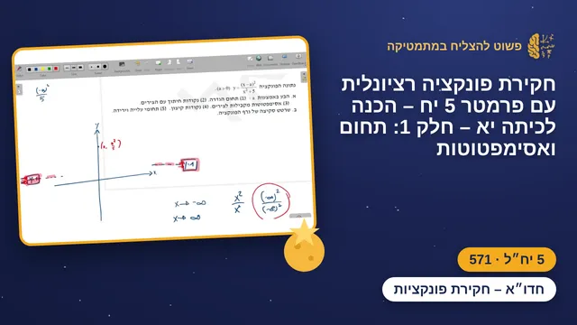
חקירת פונקציה רציונלית עם פרמטר 5 יח – הכנה לכיתה יא – חלק 1: תחום ואסימפטוטותחקירת פונקציה רציונלית עם פרמטר 5 יח – הכנה לכיתה יא – חלק 3: טבלה ושרטוטf(x)=2x³−9x²+12x−a – פרמטר, משיק ושטחחקירת פולינום f(x)=x³−3x+2 ושטחיםפולינום – האיבר המוביל והתנהגות באינסוף, זיהוי גרףחקירת f(x)=a∕(x²−4) – מציאת פרמטר משיפוע המשיקחקירת f(x)=6x(√x−m) – המשך: גרף ושטחחקירת f(x)=1+½x−√(2x+b) – מציאת b ותחום הגדרהחקירת f(x)=√(5−2x)+bx ופונקציה קדומהחקירת f(x)=±x²√(5+x) – זיהוי גרף ופונקציית נגזרתהקשר בין גרף הפונקציה לגרף הנגזרתחקירת f(x)=(x²−4x+5)∕(x−2) והפונקציה g(x)=│f(x)│חקירת f(x)=(2x²−2)∕(x²−4)+1 – אסימפטוטות וזיהוי גרפיםהקשר בין f, f′ ו-f″ – זיהוי גרפיםחקירת פונקציה מורכבת fx=x²−kx³ עם פרמטרפונקציה זוגית ואי זוגית – הבנה וזיהויחקירת פולינום fx=3x⁴−2x³ – קיצון ותחומי עלייה וירידהחקירת פונקציה רציונלית עם פרמטר y=x−1∕x²−b²חקירת פולינום fx=3x⁴−2x³ – פתיחההסבר קשר בין כל הפונק קשר בין נגזרת ראשונה לשניה הסבר מטורף 5 יחתרגילי קעירות וקשר בין פונק 571 5 יח מתמטיקה הגאונים 2תרגילי קעירות וקשר בין פונק 571 5 יח מתמטיקה הגאונים 1תרגילי קעירות וקשר בין פונק 571 5 יח מתמטיקה הגאונים 3הזזות פונק אופקית ואנכית - 4-5 יחהזזות פונק אופקית ואנכית - 4-5 יחהזזות פונק אופקית ואנכית - 4-5 יחהזזות פונק אופקית ואנכית - 4-5 יחהזזות פונק אופקית ואנכית - 4-5 יחהזזות פונק אופקית ואנכית - 4-5 יחהזזות פונק אופקית ואנכית - 4-5 יחהזזות פונק אופקית ואנכית - 4-5 יחפונק כללית שאלה מתוקה וחמודההסבר על כל סוגי הפונקציות שנלמד בכל התיכוןמשמעות של פונקציה ונגזרת – מותאם לכל היחידותהסבר משמעות פונקציית שורש – איך גוזרים, תחום הגדרה ופתירת משוואותקשר בין פונקציה לנגזרת לנגזרת שנייה 5 יח 4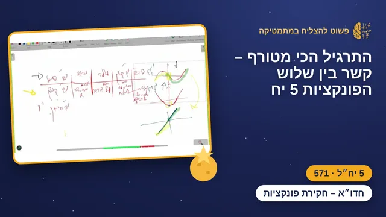
התרגיל הכי מטורף – קשר בין שלוש הפונקציות 5 יח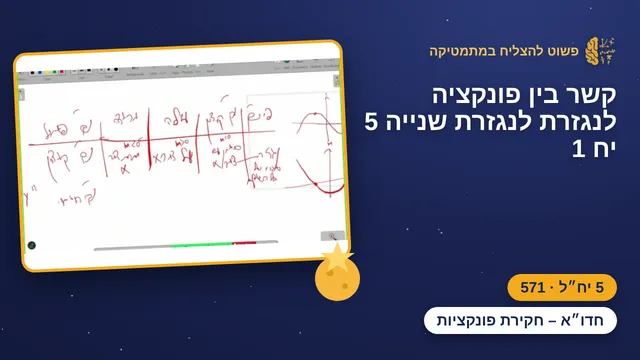
קשר בין פונקציה לנגזרת לנגזרת שנייה 5 יח 1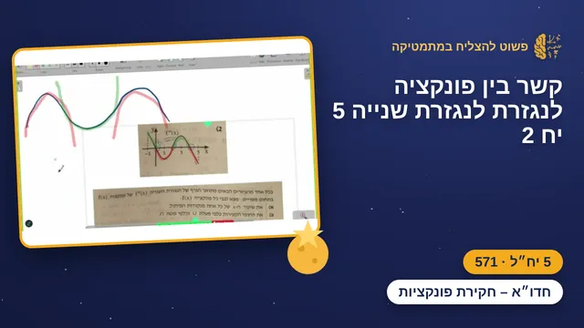
קשר בין פונקציה לנגזרת לנגזרת שנייה 5 יח 2קשר בין פונקציה לנגזרת לנגזרת שנייה 5 יח 3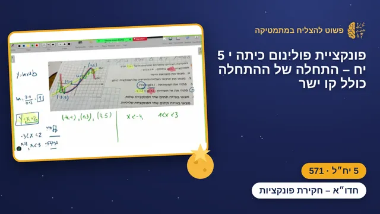
פונקציית פולינום כיתה י 5 יח – התחלה של ההתחלה כולל קו ישרהסבר פונקציה זוגית ואי-זוגית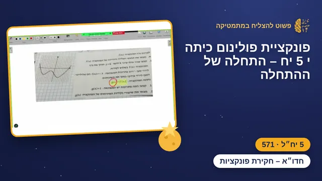
פונקציית פולינום כיתה י 5 יח – התחלה של ההתחלהמשמעות של פונקציה ונגזרתפונקציית שורש חקירה מלאה עם סעיפים חכמיםלמצוא אסימפטוטה אופקית בפונקציית שברעבודת קיץ הכנה לכיתה יא 5 יח – שאלת שבר עם פרמטרחקירת פונקציית שבר 571 שאלות בגרות 5 יחשאלות קצרות 571 5 יח – פונקציה זוגית ואי-זוגית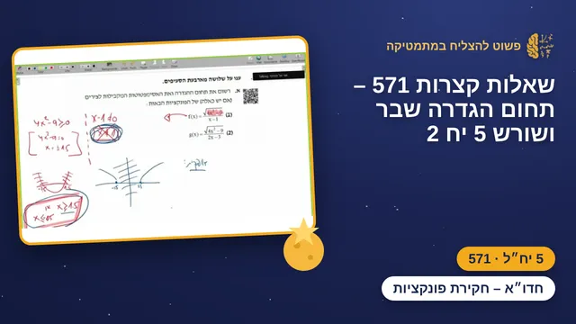
שאלות קצרות 571 – תחום הגדרה שבר ושורש 5 יח 2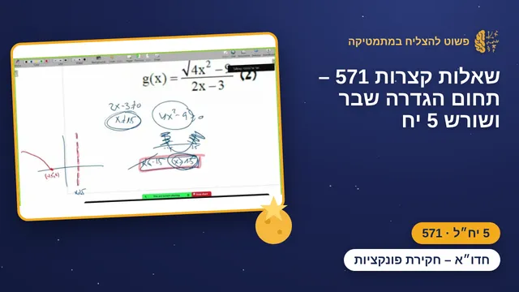
שאלות קצרות 571 – תחום הגדרה שבר ושורש 5 יחשאלות קצרות 571 5 יח – תחום הגדרה עם חור בפונקציית שברפונקציה מורכבת – תרגיל התחלה571 שאלה 1 שאלות קצרות – פונקציה עם שבר ושורש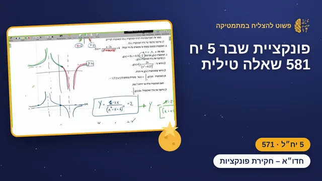
פונקציית שבר 5 יח 581 שאלה טיליתפונקציית שורש – תחום הגדרה, איך גוזרים ואיך פותרים משוואהתרגיל דיפרנציאלי טיל בליסטי 5 יח כיתה יהסבר משמעות פונקציה ונגזרת – הבסיס של הבסיס שאלון 471אסימפטוטה אופקית – הסבר נדיר ביותר 471סעיף חכם 1 – לחלק לפונקציה: מה קורה לפונקציה 4 5 יחקשר בין פונקציה לנגזרת עם פונקציית שבר – הבנה עמוקה 4 5 יחפונקציית שבר רציונלית – חקירה מלאה עם מציאת נעלםחקירה מלאה של פונקציה רציונלית (מנה) שאלון 471 571 – מהבסיס עד הסוףסעיפי חשיבה בפונקציה והזזותחקירת פונקציית פולינום – חקירה מלאה כולל סעיפים מיוחדיםאיך פותרים משוואות פולינום ומורכבת – הכי פשוט בעולםפונקציה – מה אנחנו הולכים לעשות איתה ומה אנחנו רוצים ממנהמשמעות של פונקציה ונגזרת – כל התורה על רגל אחתהסיפור של הנגזרת – משמעות ואיך גוזרים פולינום ומורכבתחקירת פונקציה רציונלית – הסבר על אסימפטוטות אנכית ואופקיתהסבר קשר בין פונקציה לנגזרת ולנגזרת שנייהחקירת שורש – פונקציית מכפלה, תרגיל בסיסי וטוב 4 5 יחפונקציית פולינום עם משיקים – שאלה בסיסית וטובה 3 4 5 יחחקירת שבר עם סעיפים חכמים – שאלה פצצה 471 571חקירת שורש עם נעלם וחקירה מלאה עם סעיפים חכמים 471 571חקירת פולינום עם הבנה ומחשבה – לפתוח תודעה 471פונקציית שבר רציונלית – שאלה בסיסית על מציאת שיפוע 471-571פונקציית שבר רציונלית – שיפועים ומשיקים 4-5 יחפונקציית שבר – משיקים ושיפועים, שאלה יפה וחמודהאיך גוזרים נגזרת שורש – סיכום 4 5 יחתחום הגדרה של שורש 4 5 יחחקירת פולינום עם סעיפי חשיבהפונקציה מורכבת – שאלות לדוגמה כולל קשר פונקציה-נגזרת ושאלות חשיבה 1פונקציה מורכבת – שאלות לדוגמה כולל קשר פונקציה-נגזרת ושאלות חשיבה 2חקירת פולינום חלק ב' כולל מציאת נעלםחקירת פולינום חלק א' כולל מציאת נעלםמשמעות השיפועים בפונקציה – נקודות קיצון, עלייה וירידהמשמעות של פונקציה ושל נגזרת – כל החומר בדקהשאלת פונקציה ומחשבה ברמה גבוהה 5 יח כיתה י-יאפונקציה מורכבת – משמעות, איך פותרים משוואות וגוזריםפונקציה מורכבת – חקירה מלאהפונקציה מורכבת 4 5 יח – סיכום כל הנושא כולל סעיפים חכמיםחקירת שבר 5 יח – שאלה חכמה ביותרחקירת שבר שאלה 6 5 יח 581חקירת שבר עם סעיפים חכמים רמת 5 יח כיתה י 571 1חקירת שבר עם סעיפים חכמים רמת 5 יח כיתה י 571 2פונקציה מורכבת – פתרון משוואות, שיפועים ומשוואת משיק 481 471 2פונקציה מורכבת – פתרון משוואות, שיפועים ומשוואת משיק 481 471 1חקירת שורש 4 5 יח – פונקציית מכפלה ומציאת פרמטר כולל סעיף חכםחקירות שורש – שאלות בגרות והסבר כל החומרחקירת פונקציה עם הזזות אופקית ואנכית – תרגיל 23פונקציית שורש – נקודות קיצון קצה ומציאת פרמטריםפונקציית שורש – מציאת 2 פרמטריםפונקציית שורש ממעלה שנייה – נקודת קיצון עם פרמטרחקירת פולינום עם סעיף חכם ופונקציה זוגית – שאלה 19פונקציית שורש – הסבר, תחום הגדרה, איך ולמה גוזרים עד חקירה מלאהחקירת פונקציה מלאה – תחום הגדרה, אסימפטוטות ונגזרות: פולינום, מורכבת ורציונליתחקירת פונקציה מלאה – משמעות הפונקציה והנגזרת כיתה י 481חקירות עם משיקים כיתה י – פולינום, דיפרנציאלי תרגיל פתור 3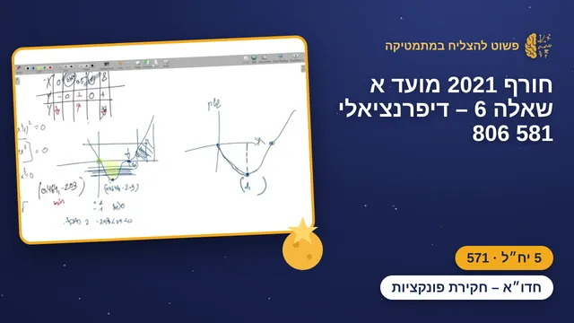
חורף 2021 מועד א שאלה 6 – דיפרנציאלי 581 806חקירות עם משיקים כיתה י – פולינום, מציאת נעלמים 3חקירות עם משיקים כיתה י – פולינום, מציאת נעלמים 2חקירות עם משיקים כיתה י – פולינום, מציאת נעלמים 1חקירות עם משיקים כיתה י – פולינום, דיפרנציאלי תרגיל פתור 2חקירות עם משיקים כיתה י – פולינום, דיפרנציאלי תרגיל פתור 1חקירות עם משיקים כיתה י – פולינום, דיפרנציאלינגזרות ומשיקים כיתה י – 2 פונקציות משיקות זו לזופונקציה רציונלית – חקירה מלאה, תרגיל פתורחקירת פונקציית שבר רציונלית – תרגיל פתורפולינום עם מציאת נעלמים – קשר פונקציה-נגזרת, הזזות, זוגיותפונקציה רציונלית – חקירה עם 2 שבריםתרגיל 16 עמ' 881 – חקירת פונקציה מורכבת עם פרמטר (יואל גבע כחול)נגזרות ושיפועים כיתה י – דיפרנציאליכיתה י – פונקציה: הסבר ופתרון משוואות ממעלה ראשונה ושנייהפונקציה מורכבת – התחלת החומרהקשר בין פונקציה לנגזרת · סרטון קצראיך מסתכלים על פונקציה · סרטון קצר